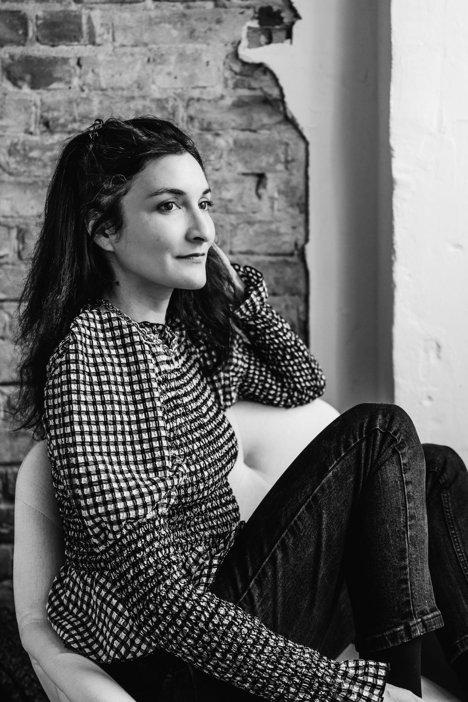

About Me
I’m a writer, editor, and occasional German-to-English translator in
Berlin, Germany. My work has been published on BBC, The Cut, Fast
Company, Atlas Obscura, Serious Eats, Vice, Thrillist, and more. If
you'd like to work together on a UX or content writing project,
please email me and I'll send you clips.
